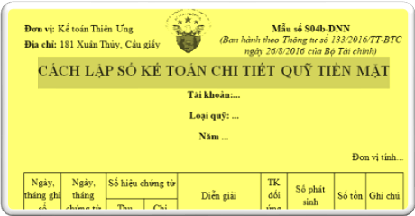

Hướng dẫn cách lập sổ kế toán chi tiết quỹ tiền mặt theo Thông tư 200 và 133. Mẫu 07a-DN (S04b-DNN) Sổ chi tiết quỹ tiền mặt dùng cho kế toán tiền mặt để phản ánh tình hình thu, chi tồn quỹ tiền mặt bằng tiền Việt Nam của đơn vị.
----------------------------------------------------------------------------------
- Sổ này dùng cho kế toán chi tiết quỹ tiền mặt và tên sổ là “Sổ kế toán chi tiết quỹ tiền mặt”. Tương ứng với 1 sổ của thủ quỹ thì có 1 sổ của kế toán cùng ghi song song.
- Căn cứ để ghi sổ quỹ tiền mặt là các Phiếu thu, Phiếu chi đã được thực hiện nhập, xuất quỹ.
- Căn cứ để ghi sổ quỹ tiền mặt là các Phiếu thu, Phiếu chi đã được thực hiện nhập, xuất quỹ.
|
Đơn vị: Kế toán Diệu Tâm Địa chỉ: 181 Xuân Thủy, Cầu giấy |
Mẫu số S07a-DN (Ban hành theo Thông tư số 200/2014/TT-BTC Ngày 22/12/2014 của Bộ Tài chính) |
SỔ KẾ TOÁN CHI TIẾT QUỸ TIỀN MẶT
Tài khoản:...
Loại quỹ: ...
Năm ...
Tài khoản:...
Loại quỹ: ...
Năm ...
Đơn vị tính...
| Ngày, tháng ghi sổ | Ngày, tháng chứng từ | Số hiệu chứng từ | Diễn giải | TK đối ứng | Số phát sinh | Số tồn | Ghi chú | |||
| Thu | Chi | |||||||||
| Nợ | Có | |||||||||
| A | B | C | D | E | F | 1 | 2 | 3 | G | |
| Ghi ngày tháng ghi sổ. | Ghi ngày tháng của Phiếu thu, Phiếu chi. | Ghi số hiệu của Phiếu thu liên tục từ nhỏ đến lớn. | Ghi số hiệu Phiếu chi liên tục từ nhỏ đến lớn. |
- Số tồn đầu kỳ - Số phát sinh trong kỳ |
||||||
|
Ghi nội dung nghiệp vụ kinh tế của Phiếu thu, Phiếu chi.
|
Phản ánh số hiệu Tài khoản đối ứng với từng nghiệp vụ ghi Nợ, từng nghiệp vụ ghi Có của Tài khoản 111 “Tiền mặt”. | Số tiền nhập quỹ. | Số tiền xuất quỹ. | Số dư tồn quỹ cuối ngày. Số tồn quỹ cuối ngày phải khớp đúng với số tiền mặt trong két. | ||||||
| - Cộng số phát sinh trong kỳ | x | x | x | |||||||
| - Số tồn cuối kỳ | x | x | x | x | ||||||
- Ngày mở sổ:...
|
Người lập biểu
(Ký, họ tên) |
Kế toán trưởng (Ký, họ tên) |
Ngày ... tháng ... năm ... Giám đốc (Ký, họ tên, đóng dấu) |
-------------------------------------------------------------------------------------
Ghi chú:- Đối với trường hợp thuê dịch vụ làm kế toán, làm kế toán trưởng thì phải ghi rõ số Giấy chứng nhận đăng ký hành nghề dịch vụ kế toán, tên đơn vị cung cấp dịch vụ kế toán.
- Định kỳ kế toán kiểm tra, đối chiếu giữa “Sổ kế toán chi tiết quỹ tiền mặt” với “Sổ quỹ tiền mặt”, ký xác nhận vào cột G.
-----------------------------------------------------------------------------
Tải mẫu Sổ kế toán chi tiết quỹ tiền mặt theo Thông tư 200 word:
Tải Mẫu Sổ kế toán chi tiết quỹ tiền mặt theo Thông tư 133 word:
Tải Mẫu Sổ chi tiết quỹ tiền mặt trên Excel theo TT 200 và 133:
Trường hợp bạn không tải về được thì làm theo cách sau:
Bước 1: Comment mail vào phần bình luận bên dưới
Bước 2: Gửi yêu cầu vào mail: ketoandieutam@gmail.com (Tiêu đề ghi rõ Mẫu sổ muốn tải)
-----------------------------------------------------------------------------
Xem thêm: Cách lập sổ quỹ tiền mặt
-----------------------------------------------------------------------------
